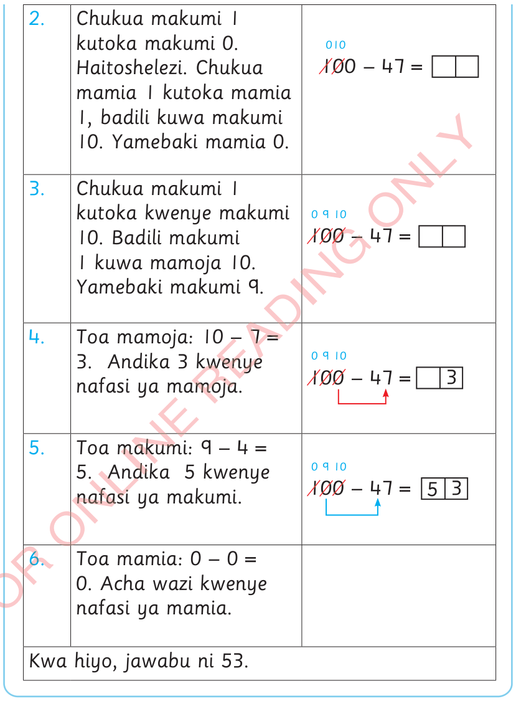

2.
Chukua makumi 1 kutoka makumi 0. Haitoshelezi. Chukua mamia 1 kutoka mamia 1, badili kuwa makumi 10. Yamebaki mamia 0.

3.
Chukua makumi 1 kutoka kwenye makumi 10. Badili makumi 1 kuwa mamoja 10. Yamebaki makumi 9.
4.
Toa mamoja: 10 – 7 = 3. Andika 3 kwenye nafasi ya mamoja.
5.
Toa makumi: 9 – 4 = 5. Andika 5 kwenye nafasi ya makumi.
6.
Toa mamia: 0 – 0 = 0. Acha wazi kwenye nafasi ya mamia.
Kwa hiyo, jawabu ni 53.
Kuhesabu Std 2 SEPT 2024.indd 69
07/11/2024 08:44